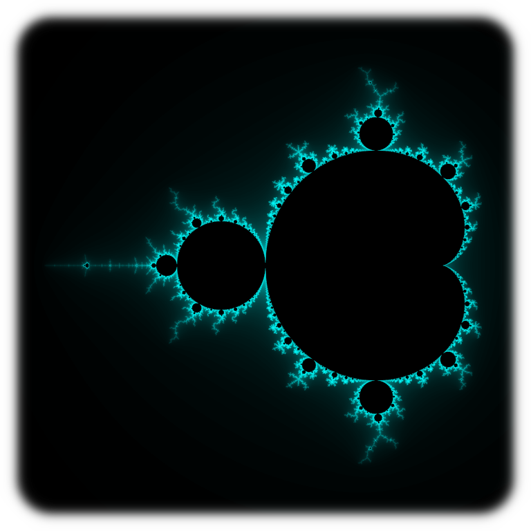

A Taste of Chaos
December 15, 2018
Growing Organically
My birthday was last week. I’m 18, an adult in some sense, and I’m staying in Freiburg to celebrate with friends, rather than taking off early to another city like I have the past three weeks. So, rather than a regular post, here’s one I’ve been wanting to make for a while — an introduction to fractals.
I’ve been tinkering with fractals for years now. It’s not hard to get started — and, really, this is why they’re so great. For such complex objects, it’s remarkably easy to understand how they’re made. It’s rare that a science as abstract as math produces any kind of art, and for it to be relatively down-to-earth — well, that’s remarkable.
Back to Basics
Let’s start with the basics. You’ll need a very basic understanding of complex numbers, and not much else — the introduction that usually comes in high school algebra is enough. If you’re comfortable with \(\sqrt{-1} = i\) and \(|a + bi| = a^2 + b^2\), you’re good.
First, Julia sets. Fix a complex number \(c\) — let’s start with \(c = 0\) to keep things simple at first — and let \(f(z) = z^2 + c\) be a function defined on the complex numbers. It’s just like the function \(f(x) = x^2 + c\), except we can plug in complex numbers instead of just real ones. We typically denote this by writing the independent variable as \(z\) rather than \(x\). In our example, with \(c = 0\), \(f(z) = z^2\). Now, pick a \(z\) in the complex numbers and repeatedly run it through \(f\) to get the sequence \((z, f(z), f(f(z)), ...)\). If this sequence always stays bounded in magnitude (formally, there is a real number \(M\) such that every term of the seuqence has magnitude less than or equal to \(M\)), then we say that that \(z\) we chose is in the Julia set corresponding to \(\mathbf{c}\), and to denote this, we color the point at \(z\) in the complex plane black. Otherwise, the sequence must have rocketed off to infinity, and we find out how fast it did. The slower the magnitudes grew, the closer they were to actually staying bounded. We reflect that by marking the point at \(z\) with something colorful — the slower the growth of the sequence, the brighter. In this way, the Julia set glows, because for the most part, numbers close to those with actually bounded sequences will come very close to staying bounded themselves.
So, what does this look like? Well, if we stick with our example of \(c = 0\), then \(f(z) = z^2\), and clearly (maybe), that will make a bounded sequence whenever \(|z| \leq 1\) — when \(z\) is inside the unit circle. If that’s not clear, try to convince yourself that \(|z^2| = |z|^2|\) for all complex \(z\). So the Julia set is a solid circle of radius \(1\), with glowing edges.

Here, let’s do a couple examples with concrete numbers. Note that we’re not changing \(c\) here, just picking different values of \(z\) with \(c\) always equal to \(0\). \(z = .5i\) gives the sequence \((.5i, -.25, .125, ...)\), which is clearly bounded, so \(.5i\) is in the Julia set. Therefore, we color it black. If we look at \(-2i\), though, we get \((-2i, -4, 8, ...)\), which is clearly not bounded. Since it grows relatively quickly, we give it a very dark color.
On the other hand, \(z = 1.01\) is interesting. It produces the sequence \((1.01, 1.0201, 1.04060401)\), which is more than just an interesting occurrence of Pascal’s triangle — it’s a sequence that’s increasing very, very slowly, but still fast enough to be unbounded. Because of that, \(1.01\) is not in the Julia set, but it almost is, and so we mark it with a very bright color — in this case, red.
Leaving the Island
That’s all well and good, but what about the banner picture? A glowing circle isn’t hard to make, and it isn’t exactly the pinnacle of beauty. This Julia set, as it turns out, is actually one of only two that isn’t a fractal — every value of \(c\) except \(0\) and \(2\) will make one.


And here they are. Julia sets are fantastically intricate, varied, beautiful patterns. It seems to me like every one fits right in to a different obscure world culture. If you open the full-res images (click or tap), the \(c\)-value used to generate the Julia set is the filename, so you can make them yourself with an application. I wrote my own, but it’s a sloppily-written mess and might do more harm than good to provide.
Another Beast

This is the Mandelbrot set. It’s perhaps the most famous fractal, but its construction is far too often hidden away like some great secret. In reality, it’s no more complicated than a Julia set.
Start by taking any complex number \(z\). Just like for a Julia set, we’re going to run \(z\) through \(f(z) = z^2 + c\), but this time, rather than picking \(c\) ahead of time, we let \(c = z\), and keep it that way for the entire sequence. I haven’t seen a good explanation for this process, and the previous sentence is anything but, so here’s an example. With \(z = i\), we let \(c = z = i\), and so our function becomes \(f(z) = z^2 + i\). Now we can run \(z\) through repeatedly: \((i, i^2 + i = -1 + i, (-1 + i)^2 + i = -i, ...)\). If you write more terms, you'll see this sequence repeats, so it stays bounded, and therefore \(i\) is in the Mandelbrot set.
Our end result is beautifully complex. The most interesting parts aren’t even in the set itself, but the halo around it — what’s just shy of being inside.
Now comes my favorite part. Think about the processes by which the Mandelbrot set and Julia sets are generated — in particular, where they overlap. Seriously, go back and try to see what at value of \(z\) the two formulas agree. It’s exactly at \(c\), right? And what about right around \(c\)? Well, we might expect that the two sets are similar, even if not identical. (Actually, we have no reason to expect this, given the fractal nature of the sets, but it turns out to be true nonetheless!) So, if we zoom into the Mandelbrot set at a point \(c\), the Julia set corresponding to \(c\) is very similar. I like to think of each Julia set as being a distillation of the Mandelbrot’s complexity into a single pattern. And since this probably sounds like gibberish, here are some pretty pictures to explain what I mean.


{kind=link}
{kind=link}
{kind=link}

Moving Around
It gets better, amazingly. Another way to think of Julia sets is as continuations of points in the Mandelbrot set (think tangent planes), and in most places, the Mandelbrot set’s glowiness is continuous — that is, if one point is bright blue, then most of the time, the points around it are bright blue, too. What that tells us is that if we trace a path through the Mandelbrot set and create a Julia set from every point along it, the resulting sequence of Julia sets will deform mostly continuously. More simply, we can make animations.

Here we have a circular path traced out in the Mandelbrot set, passing though \(0\) — hence the momentary circular Julia set — and the result is incredible. The Julia sets are black and filled-in where the path intersects the filled-in portion of the Mandelbrot set, and bright and empty — often called dust — where the circle is in the bright and empty part of the Mandelbrot set. It’s a remarkable visualization.
And there’s more, of course. We can change the generating function from \(z^2 + c\) to anything else imaginable with \(z\) and \(c\), for one. Most of them don’t produce good results, unfortunately, and I haven’t found a single one that compares to the original. But maybe I’m just sentimental.
The Mandelbrot set and Julia sets exhibit a behavior known as chaos — when small changes in input can create arbitrarily large changes in output. This contrasts with what we just said about most of the Mandelbrot set being continuous, but they’re both true at once. The Mandelbrot set is continuous in a lot of places, and chaotic in a lot of others — most notably, around the boundary of the actual set itself. And it’s this chaos, combined with the Mandelbrot set’s fractal nature, that makes all those zooms so interesting.
Lord knows I should be pushing daises
I was six feet down, ah, but something raised me up
Sent back for to lift my curse
I’m gonna get me a taste of some chaos first
Lord Huron, The World Ender